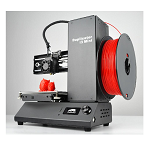
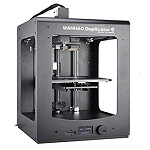

Background
Wanhao has been one of the biggest competitors in the 3D printer industry since 2011 and it is easy to see why. Wanhao printers are a large favourite amongst hobbyist due to it's ease of use and quality prints.
3D Printers
 Wanhao I3 Mini
 Wanhao D6
Wanhao D6 Plus
 Wanhao D7
Wanhao D7 plus
Wanhao D9
Wanhao D7
Wanhao D7 plus
Wanhao D9